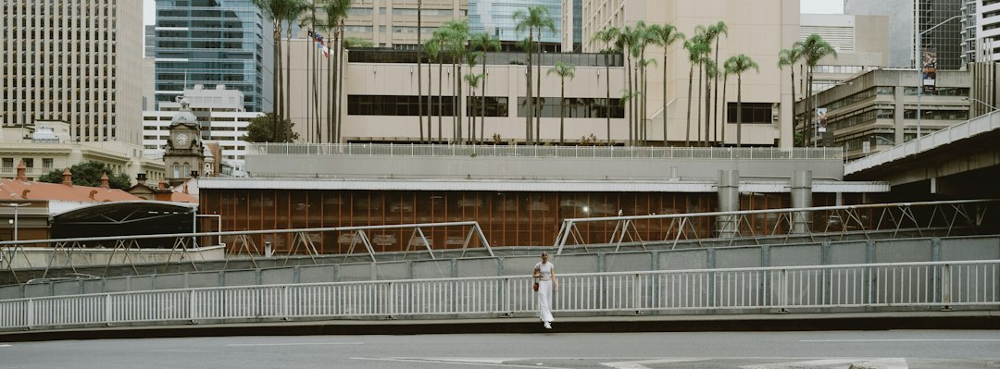

For homeowners comparing retaining wall builders brisbane options, the useful starting point is not a brochure, but a clear description of the slope, wall height, wall length and what sits above it.
Retaining Wall Builders Brisbane Explained
Retaining Wall Brisbane frames retaining work around two early questions: how high the wall must be, and whether anything sits on the ground above it. That is a useful discipline for Brisbane blocks because the published guide says many local sites have some fall, and many older walls are already holding decades-old cuts.
The quote conversation should begin with a plain site brief rather than a preferred finish. Measure the approximate height and length, note whether the wall is leaning, bulging, cracked or rotted, and describe what is above it. A driveway, building, pool, second wall or fence can change the approval and engineering path even where the visible wall face looks modest.
- Record wall height and wall length before asking for a written quote.
- Describe what sits above and behind the retained ground.
- Ask whether drainage, access and excavation are included in the proposed scope.
- For a comparison of the same topic on another build, see this Brisbane retaining wall builder guide.
Material Choice Follows Load, Access And Finish
The source page lists concrete sleeper, timber sleeper, besser block, rock, boulder, gabion and drainage systems, but it also makes a sharper point: material is often the first thing owners try to decide and the last thing that should be locked in. Height, surcharge and drainage set the design need before aesthetics or budget preference can sensibly narrow the options.
Concrete sleeper walls are described as steel-reinforced planks between galvanised posts, commonly used on Brisbane cut-and-fill blocks and as replacements when timber gives out. Timber sleepers are positioned for low garden terraces, low boundary retaining and stepped beds. Core-filled block is described for taller engineered retaining, rendered finishes and walls that carry a surcharge. Rock, boulder and gabion options are presented as better suited to larger, steeper or erosion-prone settings where a free-draining form is desirable.
Approval Questions That Change The Job
The published guide cautions that the common phrase, over a metre needs approval, is only shorthand. It says a wall avoids building approval only if it clears every relevant condition under the Building Regulation 2021 and Queensland Development Code. That makes the approval check a physical assessment, not just a height check.
Ask the builder how they treat total height, nearby structures, surcharge loads, pool barrier interaction and wall-plus-fence height. Where approval applies, the page says the wall is generally designed to AS 4678 by an RPEQ engineer and certified on a Form 15. It also separates building approval from QBCC licensing, noting that approval turns on physical triggers while licensing turns on the dollar value of the work.
Drainage Is Part Of The Structure
The guide identifies subsoil drainage as the detail that decides whether a wall remains straight over time. It describes agi drain, gravel and geofabric behind every wall, connected to approved stormwater, and links that detail to Brisbane reactive clay conditions. For a homeowner, that means drainage should be discussed as a structural item, not treated as an optional landscaping extra.
When comparing retaining wall builders, ask how the proposal handles water behind the wall, where the drainage discharges, and whether the finish you prefer still suits the site. A low timber terrace, a concrete sleeper replacement and an engineered block wall can look like the same category from the yard, but they solve different load, access and drainage problems.
Who This Applies To
This guide is most relevant to Brisbane owners with sloping blocks, older timber walls, unusable yard levels, low garden terraces, boundary retaining, stepped beds, creek-side or erosion-prone areas, and sites where a driveway, building, pool, fence or second wall may affect the retained ground. It is also useful for owners trying to understand why two quotes can differ before they choose a contractor.
The source page says retaining walls are priced on face area, meaning height times length, rather than lineal metres alone. That explains why two walls with the same length can be different jobs where one is much higher, carries a surcharge or needs engineering. Before accepting a quote, make sure the written scope names the wall type, drainage approach, approval pathway and repair or replacement assumption.
- Measure the wall. Write down approximate height and length because the source guide says pricing is based on wall face area.
- Describe the load above. Note any driveway, building, pool, fence or second wall above or near the retained ground.
- Check approval triggers. Ask whether height, surcharge, proximity to structures, pool barrier use or combined wall and fence height changes the approval pathway.
- Compare written scopes. Check that material, drainage, engineering and repair or replacement assumptions are stated before comparing prices.
| Site condition | Likely question | Source-grounded options |
|---|---|---|
| Low garden terrace | Is the wall mainly shaping beds or retaining a small level change? | Timber sleeper walls are described for low garden terraces and stepped beds. |
| Cut-and-fill block | Is an older timber wall being replaced or a practical workhorse wall needed? | Concrete sleeper walls are described as common on Brisbane cut-and-fill blocks. |
| Taller or loaded wall | Does the wall carry surcharge or need an engineered finish? | Core-filled block and engineered retaining may be relevant where loads or approval triggers apply. |
| Steeper or erosion-prone site | Does the site need a free-draining form? | Rock, boulder and gabion walls are described for larger, steeper or erosion-prone settings. |
This guide covers Brisbane retaining wall material choices, approval triggers, drainage questions and quote inputs for sloping residential blocks.